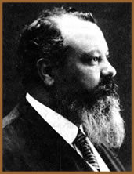
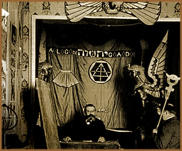

No contexto da literatura
ocultista, Papus, que significa médico
da primeira hora, é o nome de uma entidade relacionada
à medicina no Nuctemeron.
Porém, Papus, é mais conhecido como
o pseudônimo de Gérard Anaclet Vincent
Encausse, um célebre médico magista espanhol.
Filho
do francês Louis Encausse e da espanhola Irene Perez,
Gérard nasceu em 13 de julho de 1865, na Corunha,
Espanha. Aos quatro anos de idade, sua família mudou-se
para Paris, onde o jovem Gérard receberia sua educação
acadêmica formal e iniciaria seus estudos de medicina
e, paralelamente, tomaria interesse pela literatura ocultista.
Aos dezessete anos ingressou
na Faculdade de Medicina de Paris. Nas horas vagas, fazia
visitas freqüentes à biblioteca Nacional. Foi
neste período que se deparou com os principais escritos
de cunho ocultista. Esse contato inicial foi muito importante
para despertar o desejo de progredir na carreira médica
e, posteriormente, integrar os conceitos alquímicos,
astrológicos e filosóficos à atividade
profissional. Além da antiga sabedoria dos egípcios,
romanos e gregos.
Os anos seguintes foram determinantes
para estabelecer Gérard com uma reputação
respeitosa entre as sociedades iniciáticas de Paris.
Foi neste momento que conheceu o esotérico Alexandre
Saint-Yves d’Alveydre, do qual recebeu sua iniciação
hermética. Henri Delaage foi o responsável
pela iniciação do jovem Gérard na Sociedade
dos Filósofos Desconhecidos. Paralelamente,
surgiram suas primeiras anotações e passou
a integrar e liderar ativamente grupos de estudo e prática
alquímica, cabala e outras áreas de estudos.
Em 1887, com apenas 22 anos,
escreveu sua primeira obra, intitulada O Ocultismo Contemporâneo.
Sua obra, Tratado Elementar da Ciência Oculta,
foi recebida no ano seguinte com prestígio na sociedade
parisiense e logo conquistou reconhecimento internacional.
Em seguida, fundou o Grupo Independente de Estudos Esotéricos,
que mais tarde se transformaria em Escola Hermética.
No mesmo momento, fundou as revistas A Iniciação
e Véu de Ísis; além da Ordem
dos Superiores Desconhecidos. Porém, não
abandonou a prática profissional de medicina. Pelo
contrário, sua tese intitulada A Anatomia Filosófica
e suas divisões lhe outorgou o título
de Doutor em Medicina, em 1894.
No mesmo período,
filiou-se à Sociedade
Teosófica e posteriormente ao Templo
da Golden Dawn. Foi também consagrado "bispo"
da Igreja Gnóstica da França, que tinha por
objetivo resgatar a religião dos Cátaros.
Em 1897 fundou, juntamente com d’Alveydre, Jollivet
Castelot, Sédir, Barlet e Stanislas de Guaita, uma
ordem com o intuito de estudar e promover a alquimia.
A ânsia de desenvolver
métodos de cura para qualquer enfermidade humana
levou Gérard a percorrer vários países
europeus nos anos seguintes e confrontar-se com diversas
culturas. Entrou em contato com hipnose, homeopatia, técnicas
populares, curandeiros e outras fontes, fora do âmbito
puramente científico, que enriqueceram seus conhecimentos.
Mesmo
os métodos de diagnóstico eram bastante incomuns
aos médicos daquele tempo. Gérard observava
por clarividência o "astral" do enfermo
para avaliar a origem, o tipo e a causa da moléstia.
A cura era promovida através do sangue, da urina
e de fios de cabelo do paciente. Ainda, segundo suas práticas,
as enfermidades eram dividas em três grupos: do Corpo
Físico, do Astral e do Espírito;
tendo cada uma das áreas, um conjunto de métodos
específicos para se obter a cura.
A eficiência de suas
práticas elevou sua reputação. Gérard,
que a esta altura já era conhecido como Papus, ganhava
notoriedade nos meios científicos e, paralelamente,
ocultistas e herméticos. Chegou a ir à Rússia,
atendendo ao convite do imperador, por três oportunidades.
A trajetória de Papus
teve fim no dia 25 de outubro de 1916, acometido pela tuberculose
que contraiu enquanto atuava como médico militar
na Primeira Guerra. O ambiente familiar, bem como sua formação
social, certamente receberam grande influência do
intelecto lógico de seu pai, químico por profissão,
e da espiritualidade mística de sua mãe, cigana
de origem. Desta forma, torna-se mais fácil compreender
o desenvolvimento da trajetória profissional de Papus
e das influências e combinações místicas
que o notabilizaram na sociedade moderna.
Sua contribuição
para a medicina alternativa, e mesmo pela convencional,
é inegável. Seu legado, composto por aproximadamente
160 trabalhos publicados, é, até os dias de
hoje, referência de estudo para profissionais científicos
e estudiosos ocultistas.
Por
Spectrum